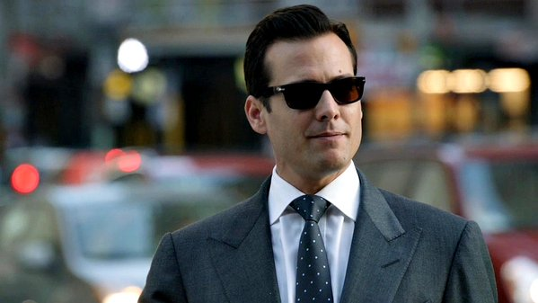

Onde assistir Suits e ver mais Harvey ?


É um dos protagonistas de Suits. Ele é um advogado e sócio nominal da Pearson Speceter Litt, além de responsável por contratar Mike Ross como associado, mesmo sem ele ter um diploma ou permissão para advogar.
Harvey é referido como um dos melhores negociadores da cidade, se formou na Universidade de Harvard e chegou a trabalhar como promotor associado de Cameron Dennis, quem o Harvey considera ser seu mentor Ele era sócio sênior na Pearson Hardman quando contratou Mike Ross, e desde então ele viu a firma passar por várias mudanças, com a saída de Daniel Hardman e uma fusão com Edward Darby, e logo se tornou sócio nominal tornando a firma Pearson Darby Specter. Após a fusão acabar, a firma se torna apenas Pearson Specter e depois Pearson Specter Litt, quando Louis Litt descobre o segredo de Mike Ross.
Harvey é visto como uma pessoa egocêntrica e ambiciosa, que não gosta de perder, apesar disso, ele aceita a derrota quando ela raramente acontece. Ele é considerado um excelente profissional e uma pessoa persuasiva e carismática, convencendo facilmente quem ele quer para o que quer. Essas habilidades lhe proporcionaram um lugar na firma Pearson Hardman, onde ele cresceu em pouquíssimo tempo e foi um exemplo para todos. Ele também é uma pessoa fiel e leal, e não aceita nenhum tipo de desonestidade. Harvey se viu muitas vezes em situações onde precisaria de sacrificar algo para o bem da firma e/ou até mesmo de Mike Ross, e o fez sem hesitar. Harvey se demonstra contra a corrupção também, odeia suborno ou propina, e este foi um dos motivos que o fez separar de seu "mentor", o promotor Cameron Dennis, que era corrupto.
